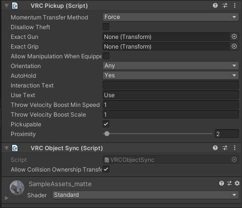
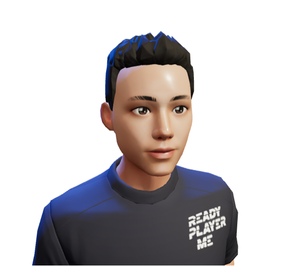

VRChat
VRChat研究
2022/10/27 by DKZ
介绍
VRChat 是一个由用户提供内容的多人在线 VR 游戏。
玩家可以在其中访问开发者提供的 World 场景，在在场景中互动，和其他玩家聊天，选择个性化的 Avatar 角色展示。
开发者可以搭建自己的 World 场景，设置互动内容，分享到社区邀请玩家访问，或制作 Avatar 提供给玩家。
只支持 Unity 引擎开发（v2019.4.31f1），渲染使用 Build-in Render Pipeline(legacy) 默认管线。
提供 VRCSDK3（World）和 Avatar3.0 SDK 给开发者使用。
因为 VRChat 游戏内容是用户提供的，所以需要一套沙箱机制，限制开发者可以访问的组件和系统功能，以保证安全性。
禁用了部分 Unity 组件（参考组件白名单）。并提供 Udon 让开发者实现简单的游戏功能。
World
Prefab
提供一些方便的预制件快速构建world
- VRCWorld 基本组件拖入场景就可以
- VRCPortal 通过roomid链接其他world
- Video Player 一起看视频
- Pen 画画
- ...
Player API
提供了一些 Udon 节点处理线上玩家交互
- getPlayers
- postion,speed
- Collisions
- Voice
- Avatar
Network
联网处理多个client世界同步
- VRC Object Sync 组件同步 GameObject transform
- Variable blogImg/synced 属性同步值
- SendCustomNetworkEvent 发送事件给所有玩家
 例子：pickup
Udon Node Graph
类似蓝图的编程方式，实现自定义的脚本，节点分了如下的几类
- Debug 日志
- Events 事件
- Special 编程相关 循环 值
- System 系统 时间 基本数据类型 (有限的调用系统功能)
- Type 类型
- UdonBehaviour 事件广播 状态设置
- UnityEngine Unity组件
- VRC VRChat组件
Avator

1.利用支持VRChat的捏脸软件 Avatar Creator Systems 创作卡通、emoji风格的 Avatar。 2.第三方角色创造软件VRoid。 3.专业建模软件。
1.需要一个绑定骨骼的模型导入unity。 2.unity里面绑定animator组件对应骨骼名称，绑定动画。 3.拖入vrc avatar组件并设定摄像机位置，并依次解决vrchat里的报错。
发布
VRChat Community Labs
发布你的 World 到社区，经过审核后会自动发布
Open Sound Control（OSC）
设备间传输数据，和其他人聊天。
midi
支持额外的硬件设备
Unity 编辑器扩展 & 插件开发
编辑器扩展
1.顶部编辑器菜单：引用using UnityEditor; 使用MenuItem;
2.Inspector面板的处理：继承Editor，重写虚方法：OnInspectorGUI，并调用(父类的此方法)base.OnInspectorGUI
3.窗口的面板：继承：EditorWindow, 使用EditorWindow.GetWindow; 调用窗口的Show方法。
GUI
GUILayout(带自动布局)
EditorGUI(只能在编辑器使用)
EditorGUILayout
Managed plug-ins
可使用 C# .NET框架打包dll使用，vrchat可能是这种方式。
Native plug-ins
可以调用系统原生的库中的函数，要针对操作系统分开构建。
Visual Script
把大象放进冰箱一共分三步
1.Unity对象映射到节点对象（反射获取成员自动生成） 2.用这些节点构建一个图形化的编辑脚本系统（编辑器，节点逻辑，Debug） 3.图形脚本映射回脚本语言执行
结论
Visual Script 优缺点？
优点
1.门槛低 设计师友好 2.现代引擎趋势 大型游戏工业化分工细化后 为关卡设计师提供工具 3.优例 Shader Graph - 发展成熟 线性渲染管道合适 - 步骤可视化 - 功能有限，几百个节点即可满足
缺点
1.逻辑复杂 抽象时就是一堆乱麻 2.维护成本高 3.协同不方便 merge可读性 用不了git这种 4.学习成本 文档变成视频 5.制作成本 做不好就是飞行仪表盘 6.debug
Recroom vs VRChat 模式？
VRChat提供了高的灵活度而大多用户没有能力使用。 类似的VR内编辑器也提供了很大的灵活度，但其实用户并不需要一颗飞在天空中的树，即使是专业的游戏开发也有辅助自动生成。 应该包装限制灵活度，类似建造游戏（Townscaper）或者类似的方式可以扩大受众。
Reference
docs
home
udon video
avator video
example video
unity UI
unity plugins
Games104